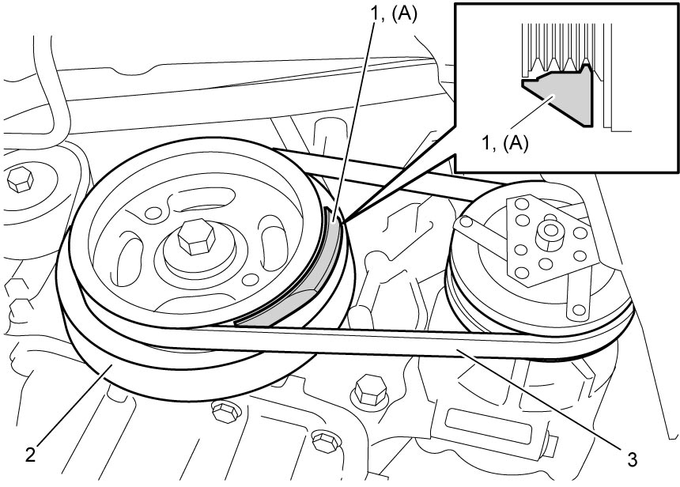
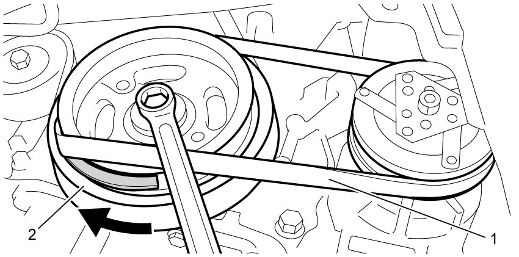
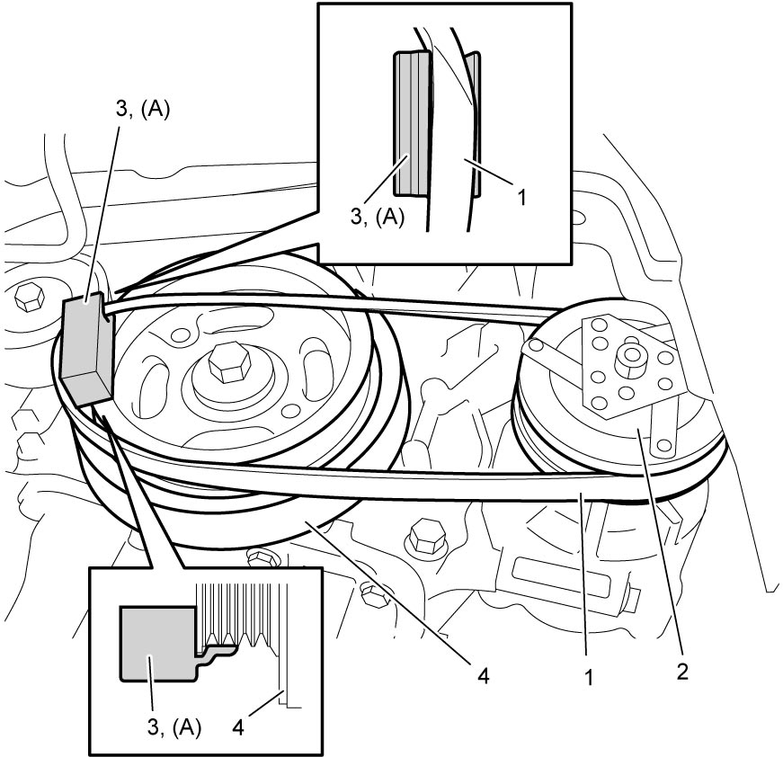
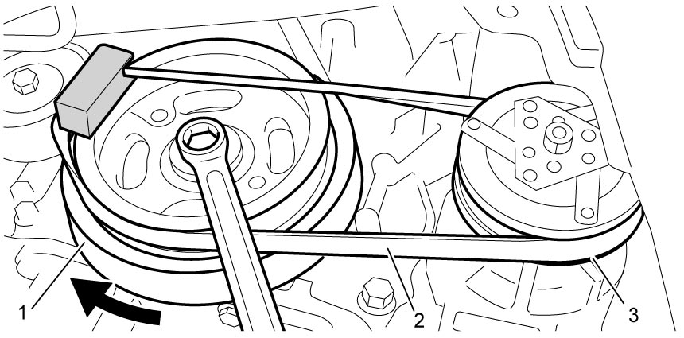

7B
| Compressor Drive Belt Removal and Installation |
M16A Model and D16AA Model
K14C Model
Removal
1)Hoist vehicle and remove right front fender lining, if necessary. 
2)Place special tool (1) between crankshaft pulley (2) and compressor drive belt (3) as shown in figure.


 "Expand image")
3)Remove compressor drive belt (1) by turning crankshaft pulley (2) clockwise.

 "Expand image")
Installation
Reverse removal procedure noting the following points.
•Fit ribs of compressor drive belt (1) into grooves of magnet clutch pulley (2).
•Fit compressor drive belt into groove in special tool (3) as shown in figure.
•Fit ribs of special tool and compressor drive belt into grooves of crankshaft pulley (4) as shown in figure.
•Turn crankshaft pulley (1) clockwise until ribs of compressor drive belt (2) fit into grooves of crankshaft pulley and magnet clutch pulley (3) completely.
•Turn crankshaft clockwise 720° and check that all ribs of the belt fit into grooves of pulleys.
•Check compressor drive belt tension.
•Fit compressor drive belt into groove in special tool (3) as shown in figure.
•Fit ribs of special tool and compressor drive belt into grooves of crankshaft pulley (4) as shown in figure.

 "Expand image")

 "Expand image")
•Check compressor drive belt tension.